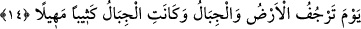

kaynaklanan şaşkınlıktır. Fâdıh da insanı rezil eden ve durumunu açığa çıkaran o
günahkâr kişinin ayıbıdır.
14. O gün (kıyâmet günü) yeryüzü ve dağlar sarsılır; dağlar çöküntü ile akıp
giden kum yığınına döner.
“O gün (kıyâmet günü) yeryüzü ve dağlar sarsılır;” yâni o gün Allah’ın heybeti ve
azametinden kıyâmetin gelişine bir alâmet, Allah’ın isyankârları hesaba çekme
hususundaki hükmünün başlamasına bir emâre olsun diye yeryüzü ve dağlar sarsılır.
Âyette dağların yeryüzünün bir unsuru ve parçası olmasına rağmen ayrıca zikredilmiş
olması onların büyük cisimler ve yeryüzünün âdetâ kazıkları olmalarından dolayıdır.
Yeryüzünün kazıkları böylesine sarsılırsa yeryüzünde hiçbir şey sâbit olarak kalmaz
demektir. Öte yandan dağlar gibi yeryüzünün yüksek nesnelerinin sarsılması, küçük
olanların sarsılmalarından daha bâriz olur ve böylesine yüksek nesnelerin sarsılması
dolayısıyla yürekler korkudan ağızlara gelir.
“Dağlar yüksek ve sert olmalarına rağmen sarsılmanın şiddetinden “akıp giden kum
yığınına döner.” Âyette geçen “/kesîb” kum yığını, kum tepeciği demektir.
“Mehîl” ise dağılıp etrafa saçılmış ve akmış kum yığını demektir. Eteğinden harekete
geçirildiğinde tepesinden aşağıya doğru akmaya başlar. Çünkü bu yığını oluşturan
dağlar, paramparça kum zerrecikleri gibi olmuşlardır. Bir başka âyette de dağların o
gün atılmış yün gibi olacağı belirtilmiştir.(el-Karia, 101/5) Mehîl üzerine basılınca
insanın ayağının altından kayar; artık parçaları birbirini tutmaz hâle gelir. Bunların
parçalarının birbirinden ayrı ve dağınık olması akıcı olmalarını sağlamıştır ki bu, kum
tanelerinin bir yerde yığılmış olmalarıyla çelişmez.
Dağların böyle akıp dağılan kum yığınına benzetilmesi bu özelliğin kendilerine âid bir
hususiyet olmasından dolayıdır. Çünkü yeryüzü ilk sarsıntının ardından kendi bulunduğu
mekânda istikrarlı biçimde kalacaktır. Bunu bize Allah’ın şu âyet-i kerîmesi
göstermektedir: “(Rasûlüm!) sana dağlar hakkında sorarlar. Deki: Rabbim onları
ufalayıp savuracak. Böylece yerlerini dümdüz bomboş bırakacaktır. Orada ne bir
iniş ne de bir yokuş görebileceksin.” (Tâhâ, 20/105-107) Özetle ifâde etmek
gerekirse, Allah’ın “yeryüzü ve dağlar kaldırılıp birbirine tek çarpışla çarpılıp
darmadağın edildiği zaman...” (el-Hakka, 69/13-15) buyurduğu üzere o gün dağlar ve
yeryüzü birbirine çarpacaktır. Bu çarpışın ardından dağlar kum yığınına döneceklerdir.
Sonra rüzgar bu kum yığınlarını savuracak ve âdeta toz zerrecikleri hâline getirecektir.
Buna karşılık yeryüzü olduğu yerde kalacak ve sonra daha önce geçtiği üzere başka bir
hâle getirilecektir.
et-Tevilâtü’n-necmiyye bu âyet-i kerîmeyi şöyle tefsir ediyor: “O gün yeryüzü ve